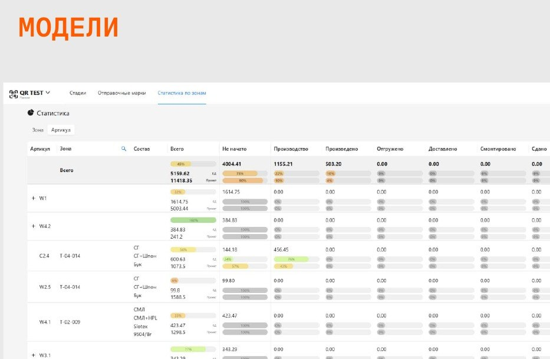
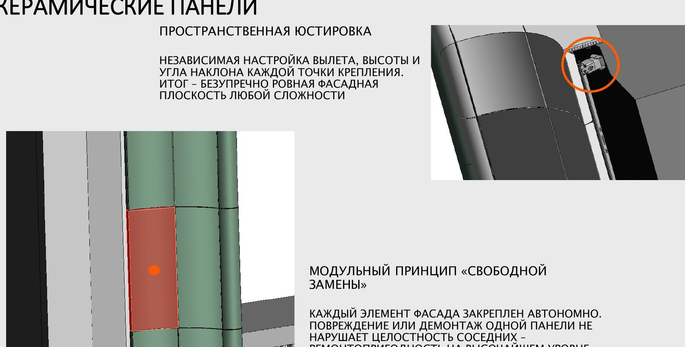
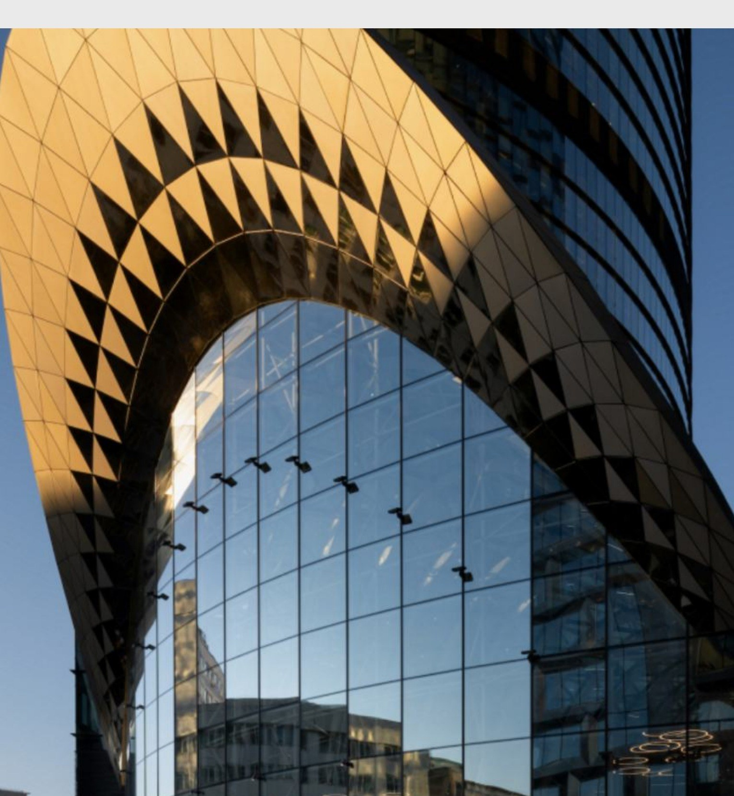
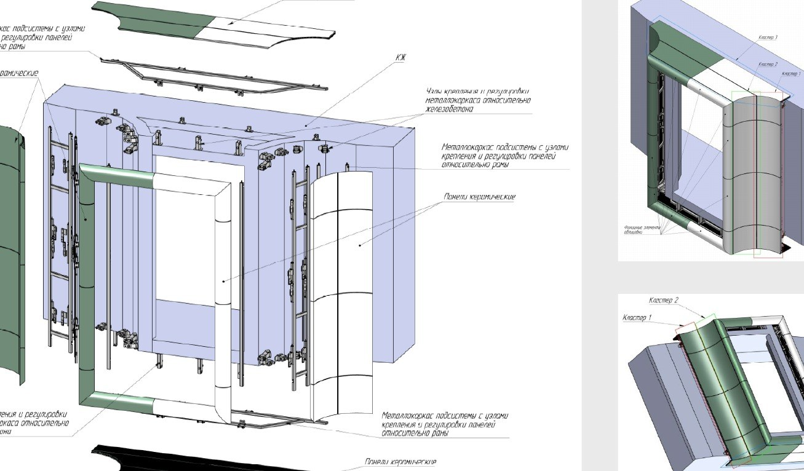
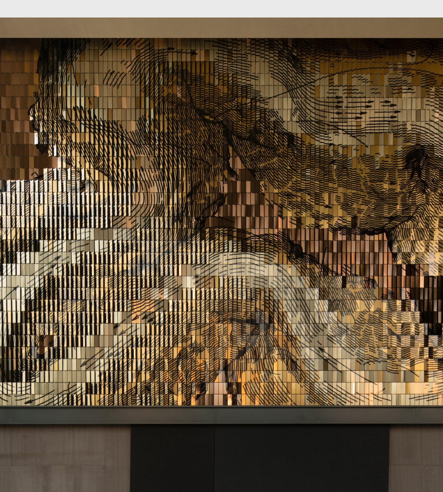
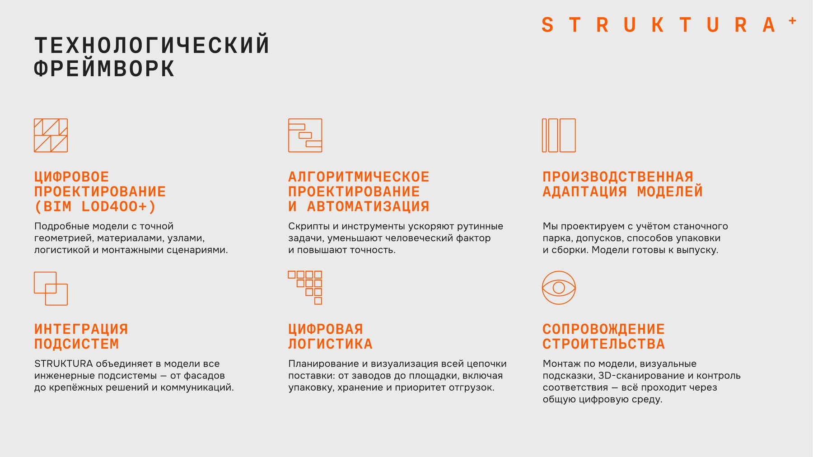
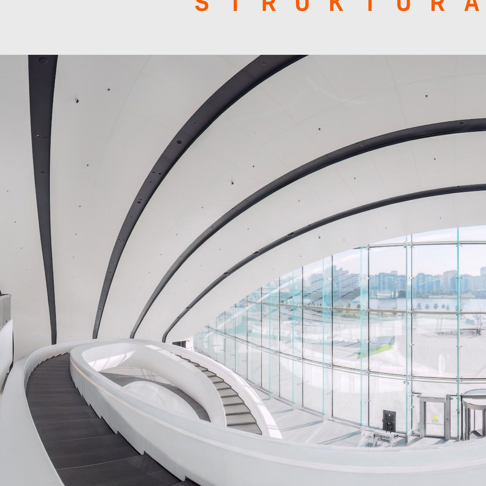
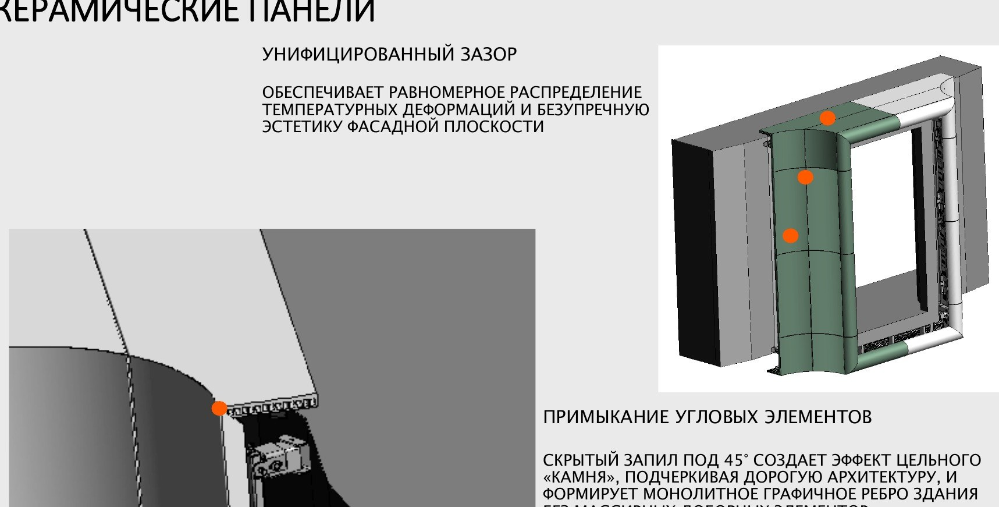

Раздельный подход
Силовой каркас задаёт общую опору. Дополнительные элементы выводят облицовку в нужное положение; между уровнями требуется увязать геометрию, сопряжения и допуски.
С первых проектов STRUKTURA разрабатывает и производит собственные подсистемы для сложной архитектуры. Более десяти лет они развиваются вместе с алгоритмическим проектированием, автоматизацией производства, маркировки, логистики и монтажа.
Прорывная инженерная технология. Её уникальность — в связке собственных алгоритмов, изготовления из модели и специально разработанных принципов сборки. Геометрия, материал, нагрузки, акустика, основание и условия монтажа задают характеристики системы для конкретного проекта.
10+ лет инженерной эволюции


Подсистема STRUKTURA объединяет несущую функцию, крепление облицовки и её точное позиционирование в пространстве.
Несущие элементы, узлы крепления и регулировки разрабатываются совместно. Система воспринимает нагрузки и задаёт предусмотренное положение и ориентацию облицовки — в том числе на поверхностях сложной и переменной кривизны.
В алгоритмы закладываются форма, материал, основание, нагрузки, акустика, допуски, изготовление и сборка. Эти факторы определяют геометрию и характеристики связанных элементов.

Внешняя архитектурная поверхность одна и та же. Отличается то, как организованы несущая работа, крепление и положение элементов.
Силовой каркас задаёт общую опору. Дополнительные элементы выводят облицовку в нужное положение; между уровнями требуется увязать геометрию, сопряжения и допуски.
Несущие элементы, геометрия поверхности и регулируемые точки крепления проектируются совместно. Положение и ориентация облицовки заложены в связанной модели системы.
Система развивалась вместе с компанией — от автоматизации проектирования к полному цифровому контуру реализации.
Правила и зависимости вместо ручной расстановки элементов.
Подготовка модели с учётом оборудования и операций.
Цифровая идентичность каждого элемента.
Комплектация, статусы и очередность поставки.
Сборка по цифровой модели с контролем позиции.
Связанные принципы проектирования, изготовления, сборки и проверки сложной конструкции.
Геометрия, материал, нагрузки, основание, точность, крепление и монтажный сценарий становятся параметрами единой цифровой модели.
Экструзионные профили, ЧПУ, роботизированные комплексы и аддитивные технологии позволяют выпускать уникальные решения по промышленным принципам.

Метки связывают элементы с моделью. Сопряжения «папа–мама» задают положение при сборке; доступ, регулировки и последовательность монтажа закладываются при проектировании.
Системы и узлы проходят расчётную проверку и натурные испытания; проектные решения дополнительно верифицируются под конкретный объект.
Не только форму, но и инженерные, производственные, эксплуатационные и нормативные критерии.
Выберите фактор на схеме.
Здесь показываем не каталог материалов, а то, как свойства материала меняют подсистему.
BIM → CAM: геометрия, данные обработки и маркировка связаны с одной моделью. Разные производства изготавливают согласованные части конструкции.
Параметрическая модель
Информационная модель
Производственные данные
Изготовление
Цифровая идентификация

Монтажная логика
Схематический принцип. Для сайта показываем геометрию вашего реального узла.
Реальный объект + реальная инженерная модель + реальный узел.



Сложная архитектурная оболочка, собственная силовая подконструкция, алгоритмическая проработка.



Алгоритмическое моделирование элементов, подготовка данных для производства, цифровая координация.



Панели сложной и переменной кривизны, инженерная интеграция и точная сборка.
Доверие строится не на слове «точность», а на понятной цепочке проверки решения.



Разработанные системы и узлы проходят расчётную проверку и различные виды натурных испытаний. Решение для конкретного объекта проверяется с учётом нагрузок, условий эксплуатации, требований проекта, действующего законодательства, технических регламентов, сводов правил и применимых стандартов.
Комментарий для маркетологов: идея визуального сравнения
Аллегория — попытка собрать плавный шар из крупных прямоугольных деталей конструктора. На сайте переводим её в инженерную схему: одинаковая оболочка, но разное устройство опор и сопряжений. В STRUKTURA показываем геометрию, разработанную под поверхность, и регулируемые точки крепления. Сравниваем подходы, без утверждений обо всех конкурентах. Для финального макета используем реальные сопоставимые конструкции.